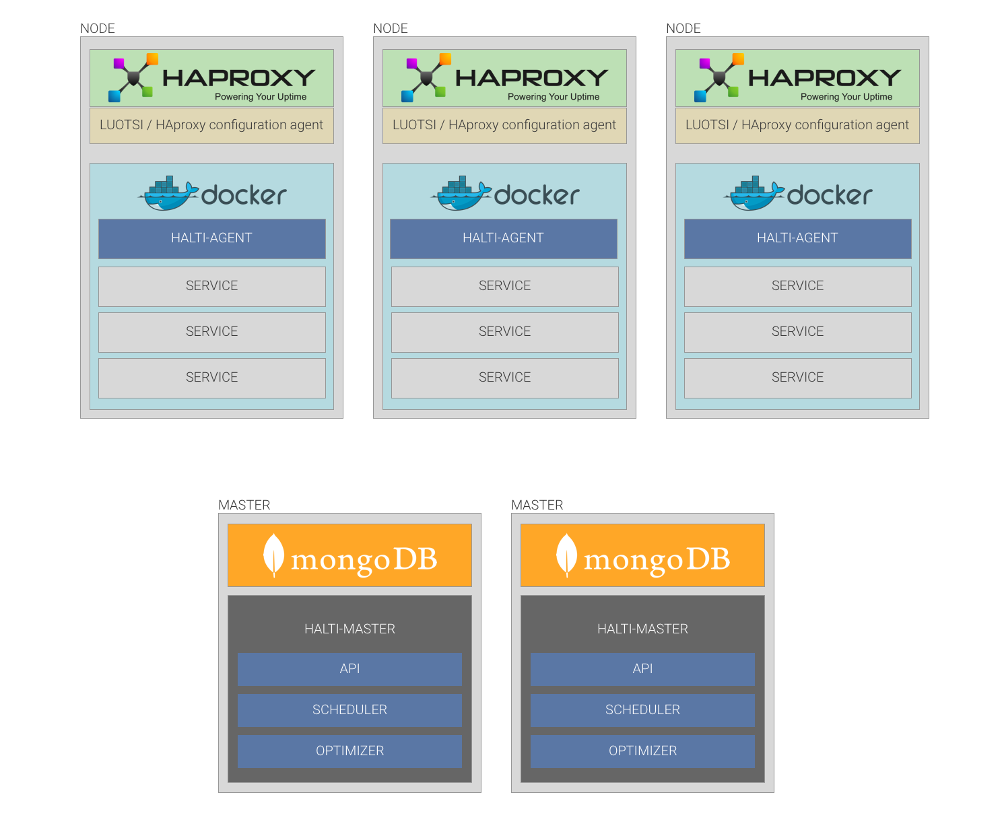

Welcome to Halti documentation
Halti is container orchestration service built by simplicity and high availability in mind.

Build
docker build -t emblica/halti-server .
Usage
PORT=4040
MONGO_URI=mongodb://192.168.99.100:32768/halti
PRODUCTION=no
docker run -d -p 10.4.1.224:4040:4040 --name halti-server --restart=always -e PORT=4040 -e MONGO_URI=mongodb://172.17.0.1/halti -e PRODUCTION=yes emb/halti-server
Scheduler
Halti scheduler is implemented in clojure and can be found from here https://github.com/emblica/halti-server/blob/master/src/clojure/halti_server/scheduler.clj
Scheduler tries to work with these limits and optimize the container configuration:
Implemented:
- Try to find best usage of resources
- Keep same instances of service in different machines
- If there is capability that is needed for service try to put it to machine that provides those capabilities
Missing features
- Security and authentication with all connections between cluster
Bugs
not known bugs currently only missing features
License
See LICENCE
Copyright © 2016 Emblica